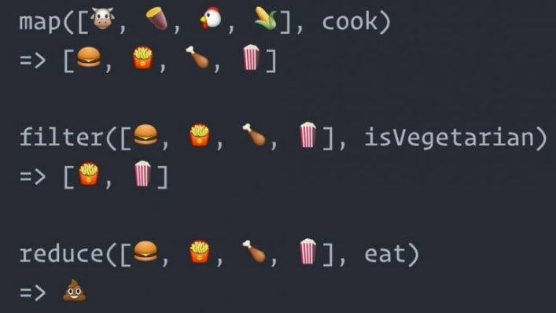

Functions that take in functions as arguments or return functions are called Higher order functions

This should be used when you want same action to be applied across
every element of a list
Example: const numbers = [1,2,3,4,5,6,7,8,9,10]
If for every element you want to calculate twice of the number then
you can use ForEach
numbers.forEach(number => {console.log(number*2)})
This should be used when you want to create a new array from an
existing one. And where every element is transformed using the same
logic.
Example: const numbers = [1,2,3,4,5,6,7,8,9,10]
You want to create [10,20,30,40,50,60,70,80,90,100] then you can use
map
numbers.map(number => number*10)
This should be used when you want to filter out elements of an array.
Example: const numbers = [1,2,3,4,5,6,7,8,9,10]
You want to create [2,4,6,8,10] then you can use filter
numbers.filter(number => { if(number%2 == 0) { return number}) }